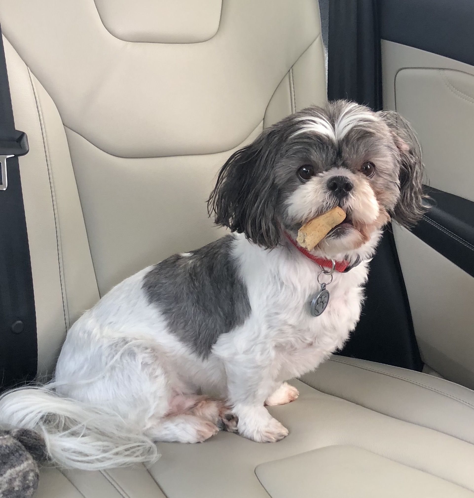
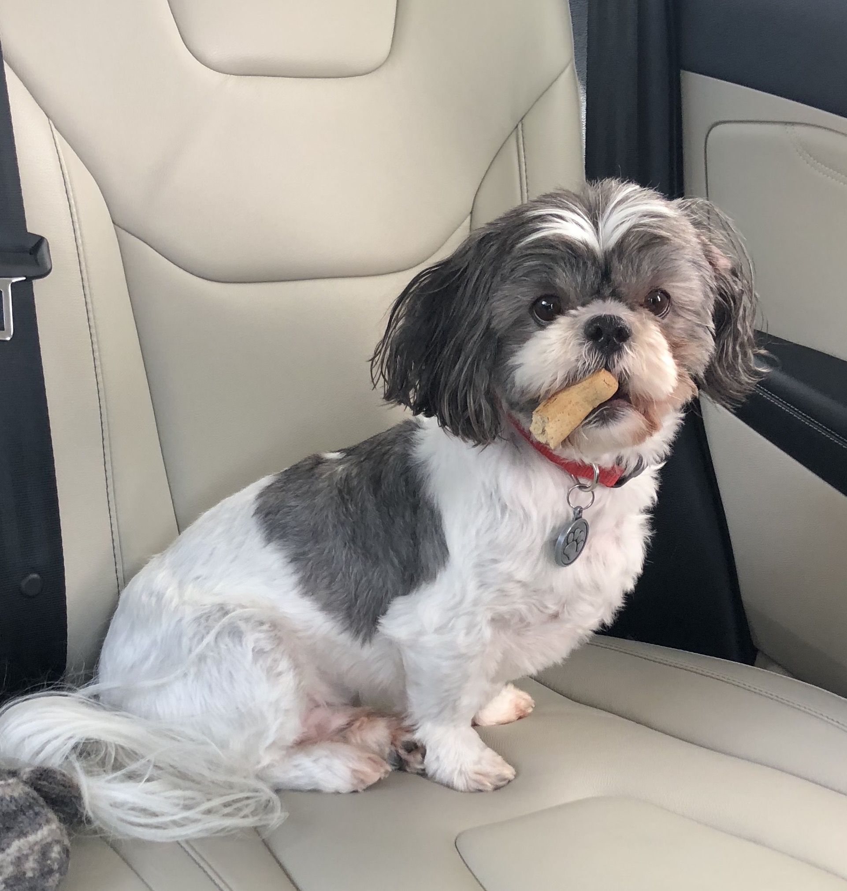
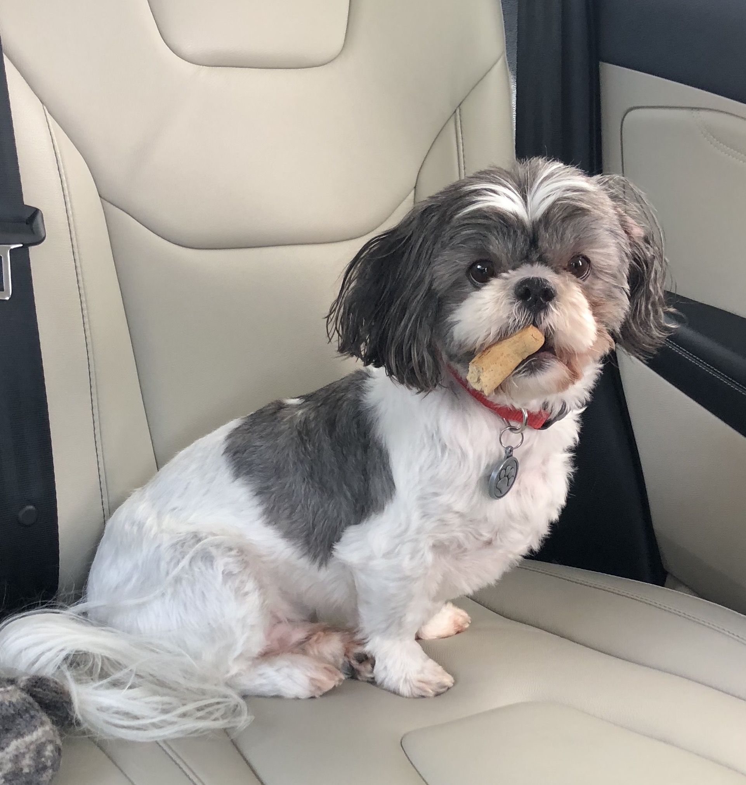

"It's a dog's life." We've all heard the expression before, I would assume. What does it mean, though? I always wondered. It wasn't until 2013, when George came into my life, that I finally understood why people referred to that saying. A dog's life is supposedly easy-going, fun-filled, and just simply amazing. I am here to justify that it is true. At least, it is absolutely true for my dog, the one and only, the heaven-sent fluffball, George Stapleton.
George is one-of-a-kind. He has been on this earth for 6 years, each one of which he has blessed every human who has ever pet him. This wesbite is a tribute to his amazing, puppy self. Here, you can learn all about his life, his best memories, his personality, and much more.
George is a black and white shih tzu who weights about 15 pounds, depending on what the day's appetite consists of. He mainly eats dog food, but his adorable puppy dog eyes are convincing enough for him to recieve a piece of human food at least once a day. His favorite human foods include spaghetti noodles, Goldfish, and graham crackers. He tries to eat bees sometimes, but he isn't fast enough to keep up with insects, so he has never actually caught one.
To discover way more about this unique doggo, navigate throughout the website and prepare to be amused.
